A Eclipsa foi uma marca autoral criada para explorar moda, experimentação e reaproveitamento de materiais. O projeto tinha como foco desenvolver o upcycling de forma mais estruturada, criando peças a partir de materiais reaproveitados e pensando também em grade de tamanhos e possibilidades de reprodução.
A produção era artesanal e realizada integralmente por mim, desde a pesquisa e desenvolvimento das coleções até desenho técnico, fichas técnicas, modelagem, corte e costura. Além do upcycling, a marca também desenvolvia outras peças seguindo uma proposta de produção responsável e em pequena escala.
Básicos Up
pri/ver 22
As primeiras peças desenvolvidas para a marca tinham o upcycling como base, com a proposta de criar peças atemporais e com modelagens que permitissem a graduação de tamanhos. O desafio era manter a prática do reaproveitamento de materiais sem limitar as possibilidades de produção e adaptação das peças.
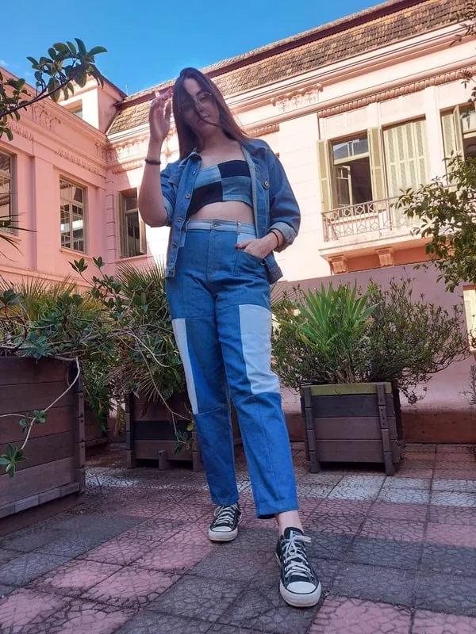
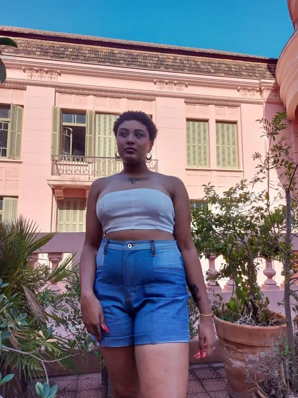
arraste para o lado →
90' vibes
out/inv 22
Explorando o upcycling em diferentes combinações de cores e utilizando tecidos sustentáveis, desenvolvi essa coleção inspirada nos programas de TV dos anos 90. A proposta foi trazer referências dessa época para as peças, explorando cores, estampas e materiais de forma criativa.
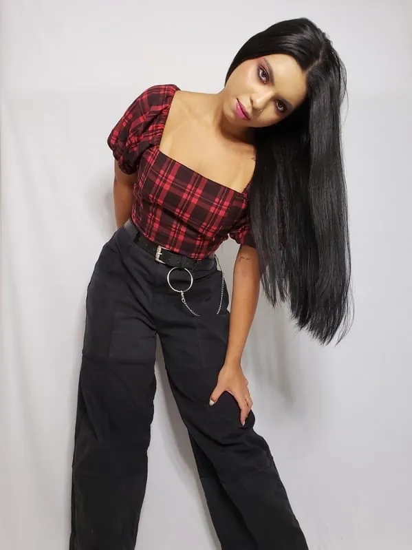
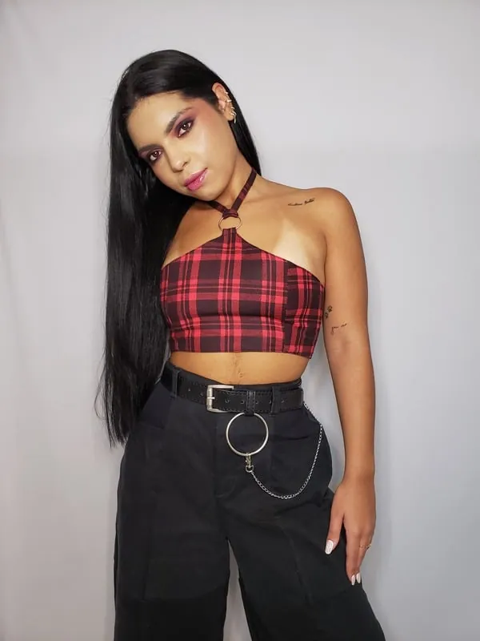
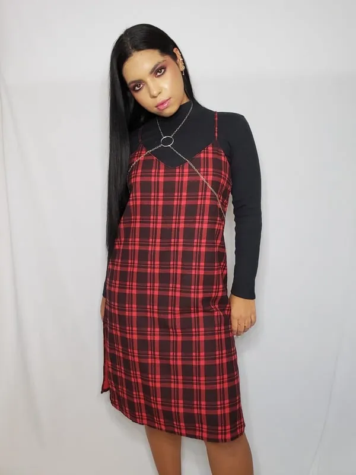
arraste para o lado →
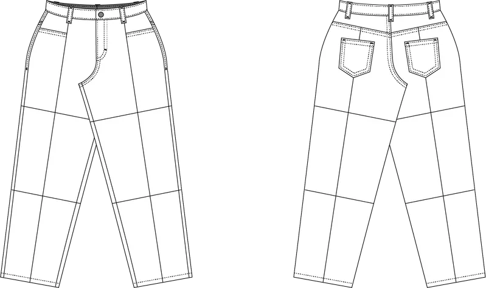
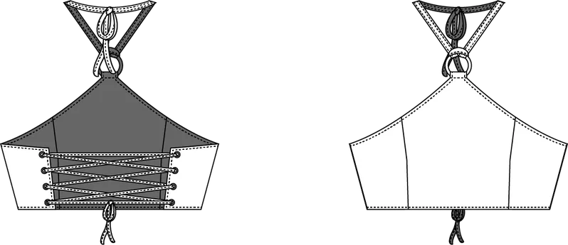
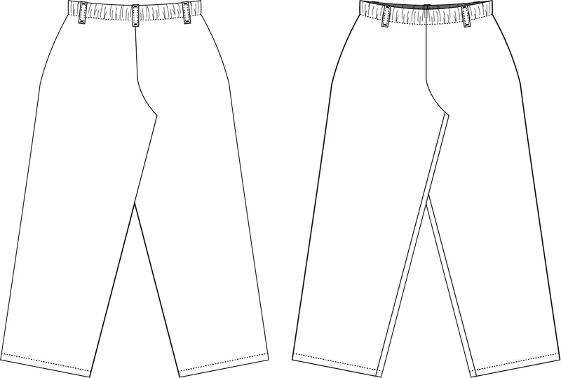
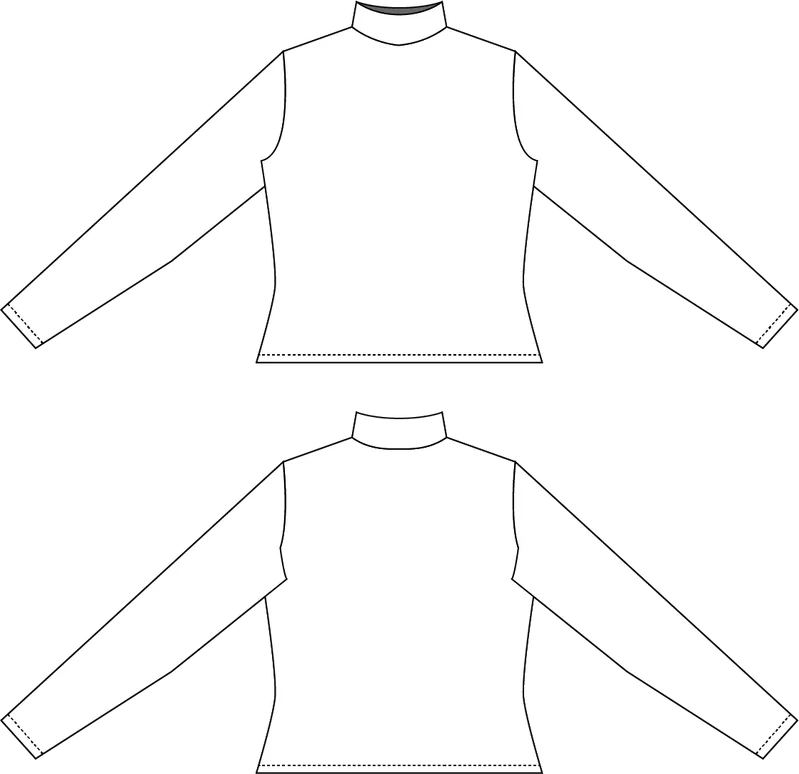
Viúva Negra
pri/ver 23
Coleção inspirada nas aranhas Viúvas-Negras e suas teias, explorando formas e referências no design das peças. Nesse drop, me desafiei a criar acessórios e desenvolvi cintos utilizando um novo material de reuso: câmaras de pneus de bicicleta, explorando novas possibilidades para o material.
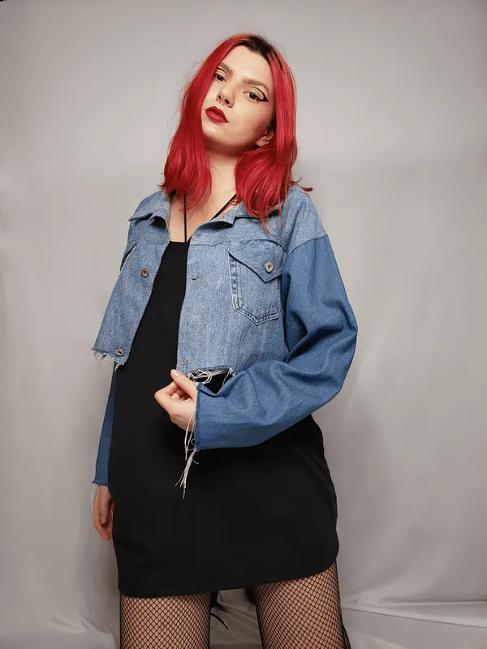
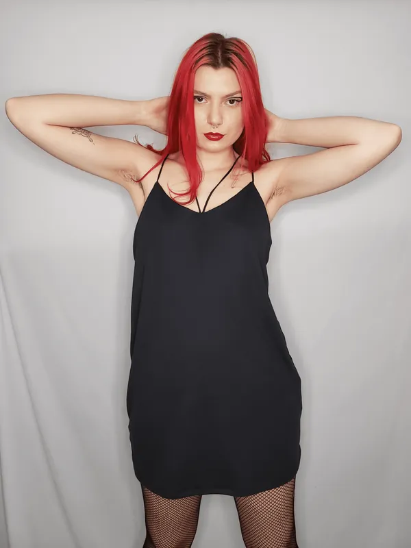
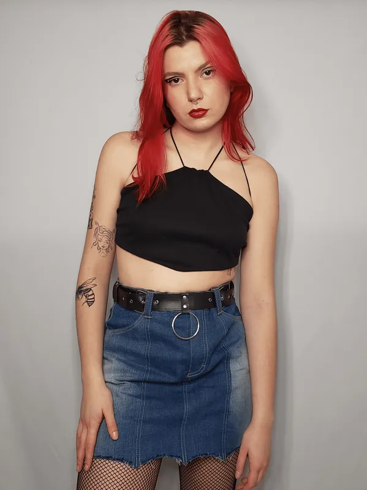
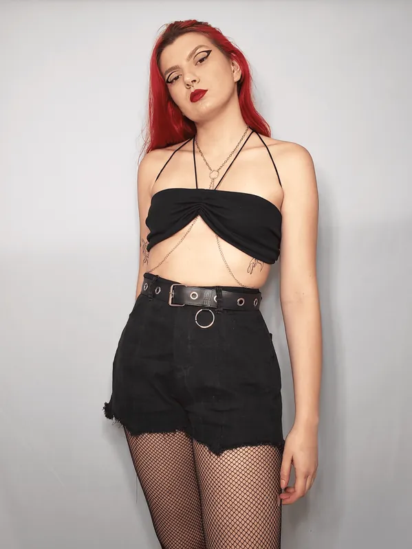
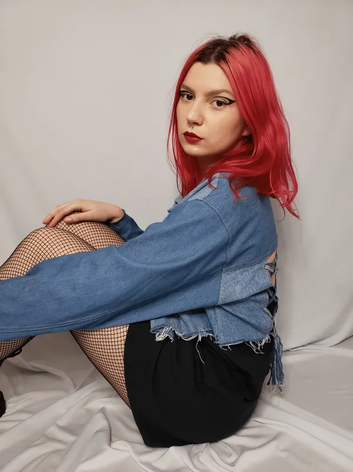
arraste para o lado →
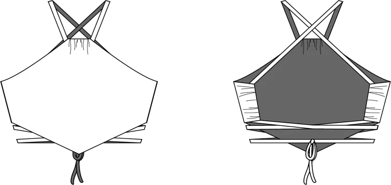
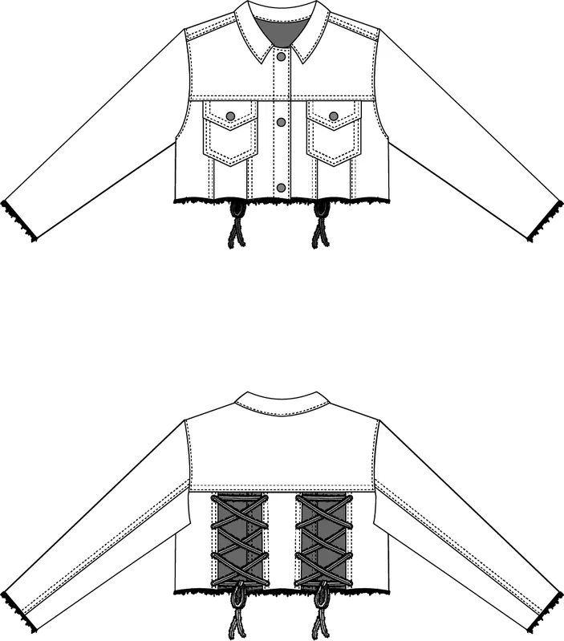
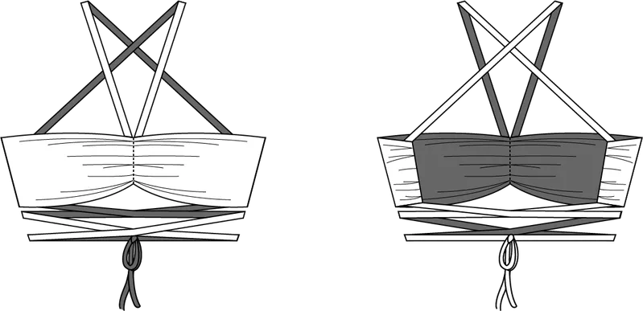
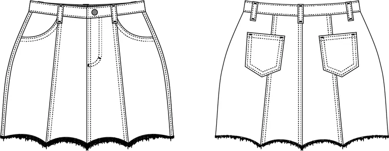
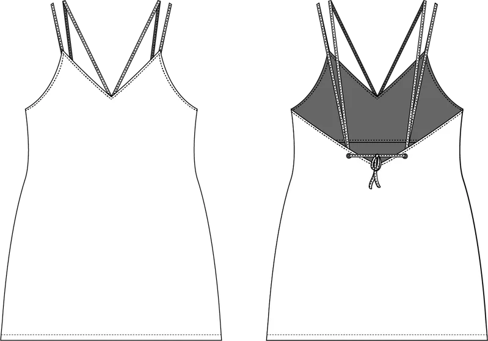
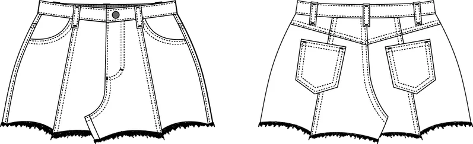